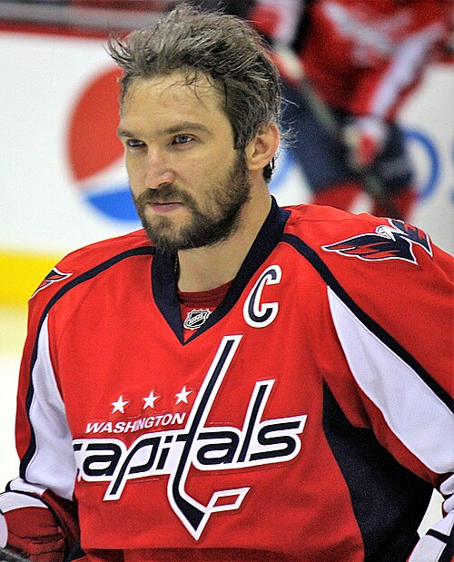
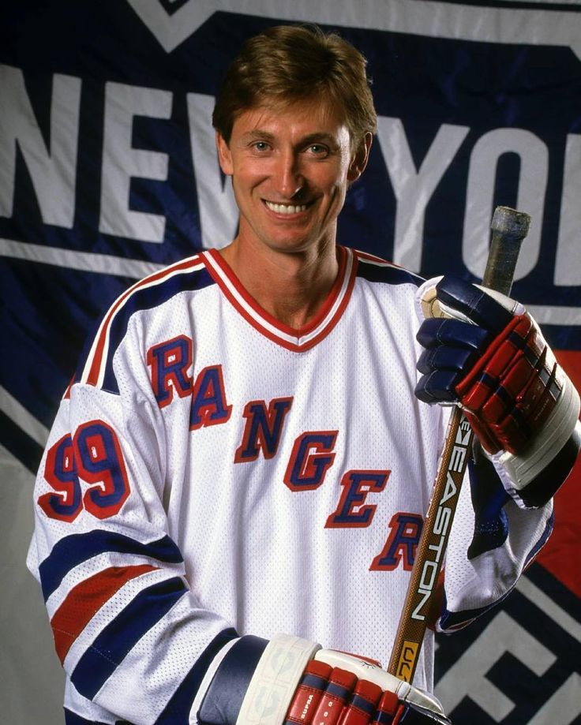
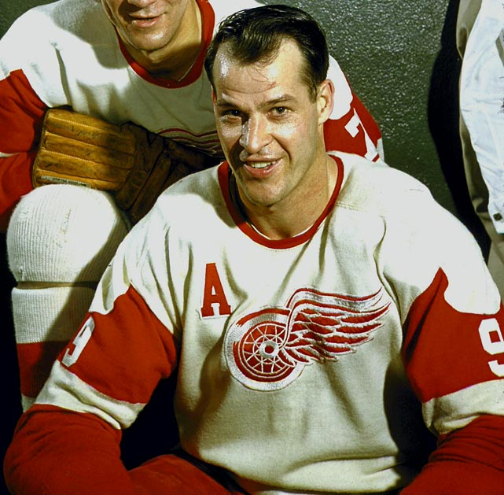
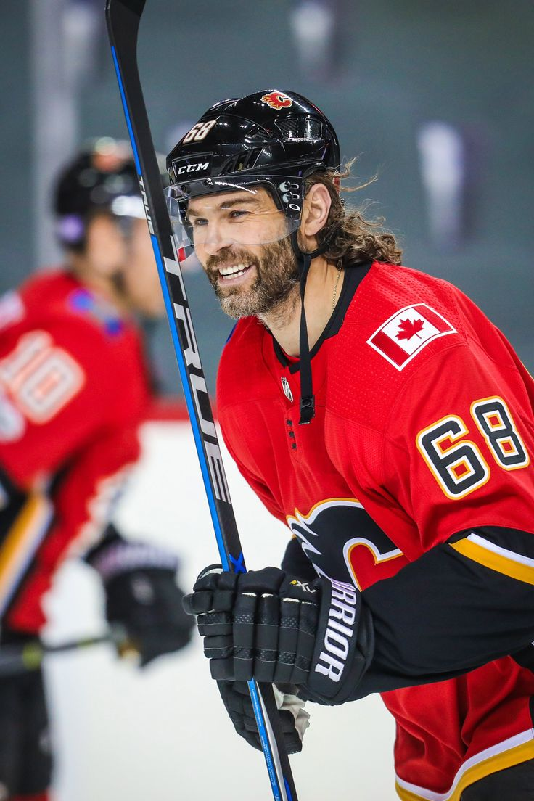
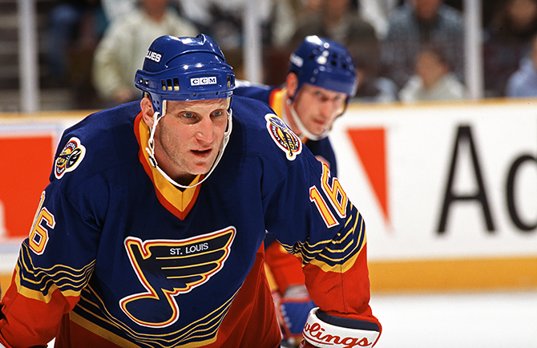

Александр Михайлович Овечкин
- Родился 17 сентября 1985 года, г. Москва, Российская Федерация
- Российский хоккеист, левый крайний нападающий и капитан клуба НХЛ «Вашингтон Кэпиталз». Обладатель Кубка Стэнли 2018.
Трёхкратный чемпион мира (2008, 2012, 2014). Лучший снайпер в истории регулярных чемпионатов НХЛ (897 шайб).
- e-mail:ovechkinteam@gmail.com

Уэйн Дуглас Гретцки
- Родился 26 января 1961 года, г. Брантфорд, Онтарио, Канада
- Канадский хоккеист, правый крайний нападающий. Играл в НХЛ с 1946 по 1971 год и в сезоне 1979/80.
Четырёхкратный обладатель Кубка Стэнли и двукратный обладатель Кубка Авко, шестикратный обладатель Харт Трофи и Арт Росс Трофи, 23-кратный участник матчей всех звёзд НХЛ.
- e-mail: info@gretzkyhockeyschool.com

Гордон (Горди) Хоу
- Родился 31 марта 1928 года, г. Флорал, Саскачеван, Канада
- Канадский хоккеист, центральный нападающий, один из самых известных спортсменов XX века.
В НХЛ установил 61 рекорд и неоднократно завоёвывал индивидуальные призы Лиги.
- e-mail: -

Яромир Ягр
- Родился 15 февраля 1972 года, г. Кладно, Среднечешский край, Чехия
- Чешский хоккеист, выступающий на позиции крайнего нападающего.
Занимает второе место по очкам в регулярных чемпионатах НХЛ и пятое место по очкам в плей-офф Кубка Стэнли.
Занимает четвёртое место по голам в регулярных чемпионатах НХЛ, является первым среди европейских хоккеистов НХЛ по количеству очков и передач.
Занимает четвёртое место в истории по количеству проведённых матчей в чемпионатах НХЛ.
Дважды завоёвывал Кубок Стэнли. В 2017 году включён в список 100 величайших хоккеистов за всю историю НХЛ по мнению самой лиги.
По количеству заброшенных шайб в официальных матчах занимает 1-е место за всю историю хоккея.
- e-mail: info@jj68byjagr.com

Бретт Эндрю Халл
- Родился 9 августа 1964 года, г. Белвилл, Онтарио, Канада
- Американский хоккеист канадского происхождения, сын хоккеиста Бобби Халла, правый крайний нападающий.
В Национальной хоккейной лиге играл с 1986 года. Бретт Халл забил 741 гол в регулярных чемпионатах НХЛ, по этому показателю он занимает пятое место в истории лиги.
- e-mail: -